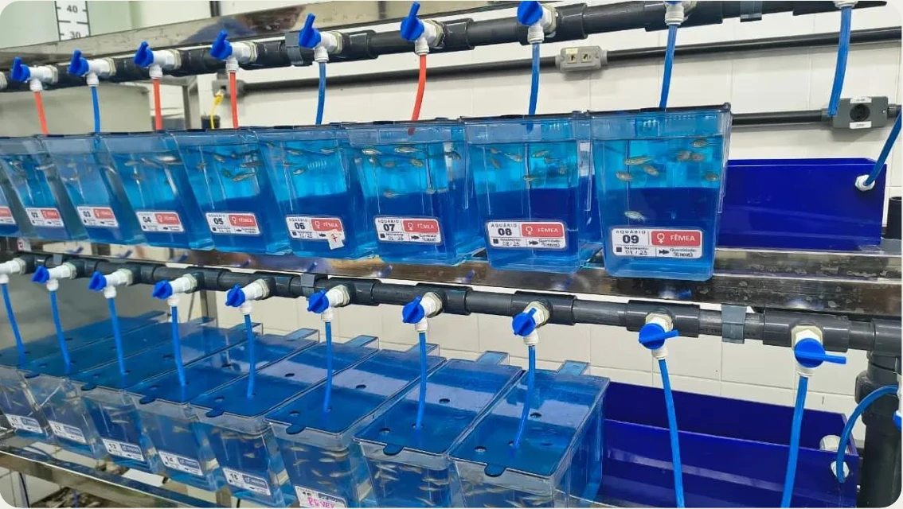
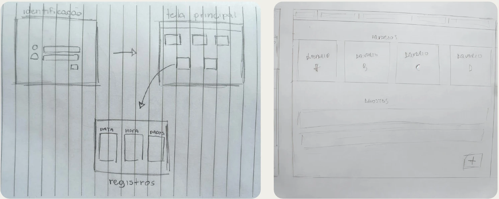
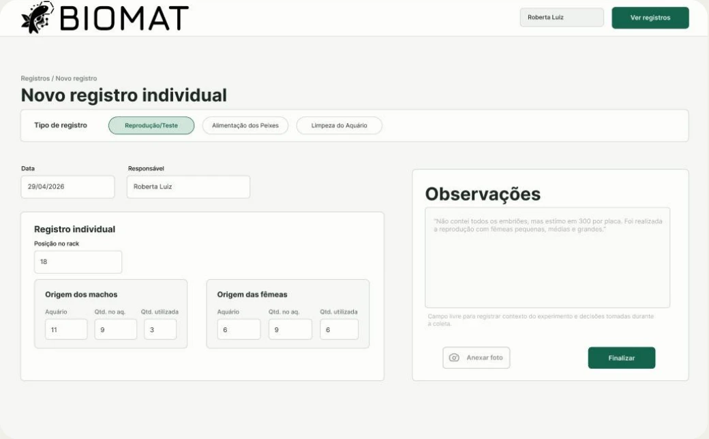
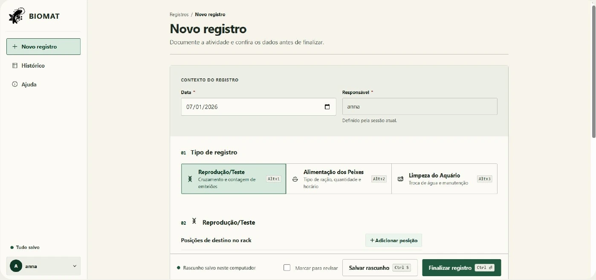
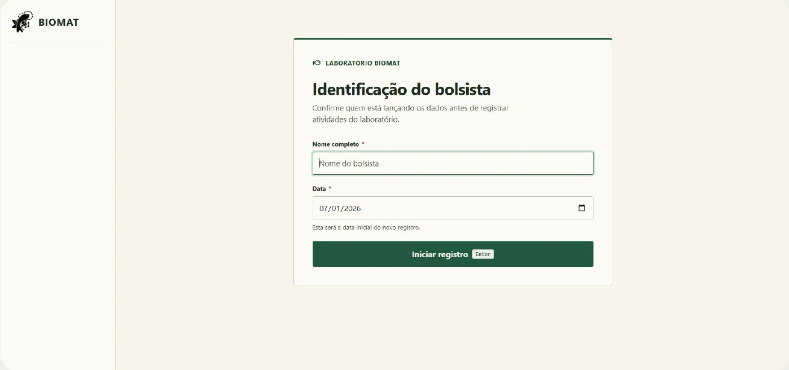
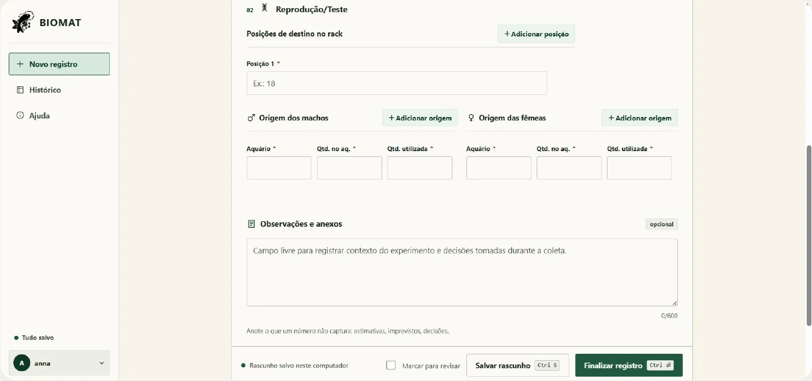
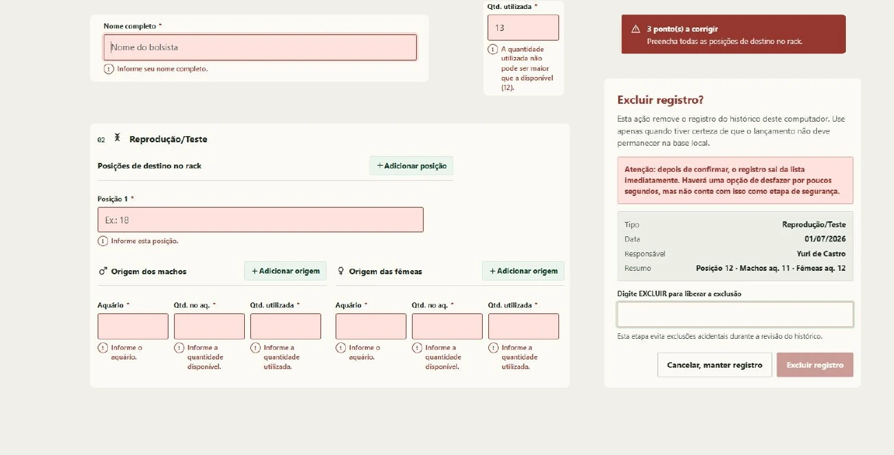
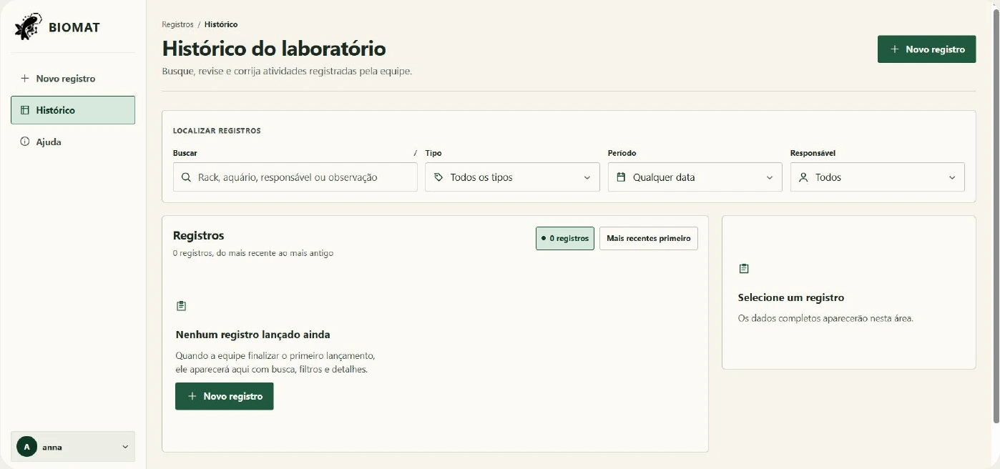

Registros que fazem parte do cuidado diário.
O Laboratório de Biomateriais da UFC pesquisa produtos baseados em biomateriais, a interação de materiais nanoestruturados com sistemas biológicos e ecotoxicologia. O projeto de IHC teve como cliente o professor Emilio de Castro Miguel e se concentrou nos registros da rotina do biotério.

Alimentação, limpeza e reprodução envolvem pessoas, horários, aquários e quantidades. Quando essas informações ficam dispersas, é difícil saber o que já foi feito e o que precisa de atenção. Falhas de comunicação também podem comprometer o cuidado com os peixes.
Do caderno a um registro padronizado.
O laboratório enfrentava erros de anotação, perda de dados e múltiplas versões dos mesmos arquivos. O registro dependia da organização individual, e parte das informações precisava ser transcrita do caderno para o Excel.
Informação dispersa
Cadernos e arquivos separados dificultavam a consulta.
Direção do projetoReunir os registros em um ambiente digital.
Falta de padrão
O conteúdo e o formato variavam entre os registros.
Direção do projetoDefinir campos conforme a atividade realizada.
Falhas de comunicação
A equipe precisava acompanhar as atividades e se organizar nas substituições.
Direção do projetoManter responsável, data e detalhes disponíveis para consulta.
Planejamos acesso por dispositivos autorizados, acompanhamento em tempo real e backup. Nesta versão, implementamos os fluxos de registro e consulta com armazenamento local.
Como a interface mudou até a entrega.
Os primeiros desenhos exploravam identificação, tela principal, aquários e registros. Na média fidelidade, já aparecem os três tipos de atividade, o formulário e a consulta ao histórico. A versão final organiza o preenchimento em uma coluna e mantém a navegação entre registro, histórico e ajuda.



Na interface final, os dados comuns ficam no início, os campos específicos aparecem abaixo e as observações vêm depois. Essa sequência permite preencher o registro na ordem em que as informações são solicitadas.
Identificar, registrar e consultar.
A identificação define o nome do bolsista e a data inicial. O responsável acompanha o registro e não precisa ser digitado novamente em cada atividade. Essa identificação organiza a autoria; não é um login com senha ou controle de acesso.
Ao finalizar, o registro entra no histórico. Ao editar, o original permanece salvo até a confirmação.

Os rascunhos são separados pelo nome do bolsista. Ao trocar de pessoa, o preenchimento em andamento fica associado à sessão anterior. Os registros finalizados mantêm o responsável original.
Três atividades, campos diferentes.
O formulário reúne data e responsável em um bloco comum. A escolha entre reprodução, alimentação e limpeza determina os campos seguintes. Assim, cada atividade pede os dados que fazem sentido para aquela rotina.
| Atividade | O que o registro reúne | Decisão de interface |
|---|---|---|
| Reprodução / Teste | Posições de destino no rack, aquários de origem, machos, fêmeas e quantidades. | Permite adicionar posições e origens, sem limitar o registro a um único aquário. |
| Alimentação | Rack, aquário, ração, quantidade e horário. | Campos próprios para documentar a alimentação. |
| Limpeza | Rack, aquário, tipo de limpeza, troca de água e produtos utilizados. | Informações de manutenção ficam separadas das outras atividades. |

As observações e fotos complementam os campos estruturados. O usuário também pode marcar o registro para revisão. A barra de ações mantém disponíveis as opções de salvar um rascunho e finalizar o lançamento.
Conferir os dados antes de gravar.
Projetamos a interface para ajudar a conferir os dados antes de salvar. Usamos regras de validação, mensagens junto aos campos e confirmações antes de excluir registros.

| Situação | Resposta da interface |
|---|---|
| Campos obrigatórios incompletos | Bloqueia a finalização, informa o que falta e leva o foco ao primeiro campo inválido. |
| Quantidade utilizada maior que a disponível | Mostra o erro na linha de origem e impede salvar o lançamento. |
| Posições de destino repetidas | Solicita uma posição diferente para cada destino no rack. |
| Percentual de troca de água fora do intervalo | Aceita valores entre 0 e 100. |
| Exclusão acidental | Exige digitar EXCLUIR e oferece uma opção temporária para desfazer. |
| Falha ao salvar no navegador | Mantém o registro aberto e avisa que os dados não foram gravados. |
Durante uma edição, as alterações só substituem o registro original depois da finalização. Cancelar a edição preserva o que já estava salvo.
Encontrar o registro e conferir os detalhes.
O histórico reúne busca por rack, aquário, responsável ou observação. Os filtros permitem combinar tipo de atividade, período, responsável e status de revisão. Os filtros ativos ficam visíveis e podem ser removidos individualmente.

Consulta
A lista apresenta os registros e a seleção abre os detalhes. A edição permite corrigir informações sem criar outro lançamento para a mesma atividade.
Continuidade
Rascunhos recuperam o preenchimento. A ajuda explica os campos, o histórico, os atalhos e como exportar ou importar um backup.
A interface distingue rascunho, registro salvo e registro marcado para revisão. Esses estados ajudam a perceber se uma informação ainda está em elaboração ou já faz parte do histórico.
Explore o protótipo final.
Construímos um protótipo em HTML com identificação, registro, histórico e ajuda. Experimente o preenchimento e explore os estados da interface.
BIOMAT v3
Os dados que você inserir ficam no navegador utilizado. O backup pode ser exportado para um arquivo e importado em outro computador.
Uma rotina de registro organizada.
Reunimos o preenchimento e a consulta em um só fluxo, com recursos para conferir, retomar e corrigir as informações.
- Formulários por atividade, com validação, observações e fotos.
- Rascunhos por bolsista e histórico com edição e exclusão confirmada.
- Armazenamento no navegador e exportação de backup.
Levar o sistema para a rotina do laboratório.
O próximo passo é compartilhar os registros entre dispositivos e definir as permissões de acesso.
Com a equipe usando o sistema, queremos observar o tempo de preenchimento e as dificuldades mais frequentes para orientar os ajustes.
Projeto em equipe com Anna, Jonas, Eduardo, Yuri, José e Gustavo · UFC · Sistemas e Mídias Digitais · IHC · 2026.1